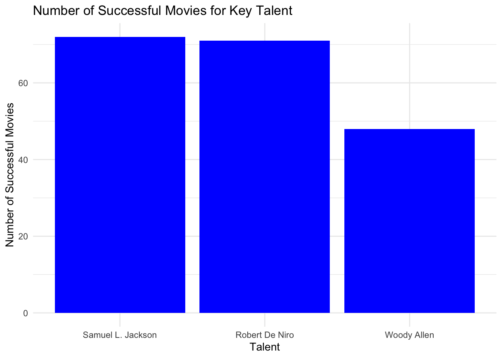

library(tidyverse)
library(readxl)
library(readr)
library(lubridate)
library(DT)
library(tidyr)
library(data.table)Mini Project 02
IMPD PROJECT
Introduction
The goal of this project is to leverage data-driven insights to identify the key characteristics of successful movies and develop a compelling proposal for a new film. By analyzing historical IMDb data on movie ratings, genres, and key personnel, we aim to guide creative decisions with statistical evidence, ultimately proposing a high-potential movie idea that aligns with current industry trends and audience preferences. please refer to: Mini-Project #02
Data Sources
Data from the The IMDb non-commercial release can be used for this project. Specifically, which are made freely available for non-commercial use, provide comprehensive information about films, including ratings, genres, and key personnel, allowing for analysis of historical trends and the development of a data-driven movie proposal.
The IMDb dataset was initially too large, so for this project, a pre-processed and downsized version provided by the professor on GitHub is used. This version retains the essential information but is optimized for more manageable data analysis in R, allowing us to run the necessary tasks more efficiently without overloading system resources.
Data Description
The data includes comprehensive information about movies, such as ratings, genres, and key personnel. The dataset consists of multiple tables:
name_basics_small: Contains information about actors, directors, and other personnel.
title_basics_small: Provides basic movie details like title, genre, and release year.
title_ratings_small: Contains IMDb user ratings and vote counts for movies.
title_crew_small: Includes data on directors and writers for each title.
title_principals_small: Details about the key actors and their roles in each movie.
title_episodes_small: Contains data on TV episodes related to series.
Loading Packages
Once the packages are installed, those will be loaded to the workspace so that they can be used later.
Load Data
Using the following code, I manage to download and process of the IMDb datasets, including name.basics, title.basics, title.episode, title.ratings, title.crew, and title.principals.
get_imdb_file <- function(fname) {
BASE_URL <- "https://github.com/michaelweylandt/STA9750/tree/main/miniprojects/mini02_preprocessed/"
fname_ext <- paste0(fname, ".csv.zip")
rds_file <- paste0(fname, ".rds")
# Check if the .rds file already exists
if (file.exists(rds_file)) {
return(readRDS(rds_file)) # Load the data from the saved .rds file
} else {
# Download only if the .tsv.gz file does not exist
if (!file.exists(fname_ext)) {
FILE_URL <- paste0(BASE_URL, fname_ext)
download.file(FILE_URL, destfile = fname_ext, mode = "wb") # Ensure binary mode for downloading compressed files
}
# Use data.table::fread for faster reading
df <- as.data.frame(fread(fname_ext))
saveRDS(df, rds_file, compress = FALSE)
return(df)
}
}
# Load IMDb data
NAME_BASICS <- get_imdb_file("name_basics_small")
TITLE_BASICS <- get_imdb_file("title_basics_small")
TITLE_RATINGS <- get_imdb_file("title_ratings_small")
TITLE_EPISODES <- get_imdb_file("title_episodes_small")
TITLE_CREW <- get_imdb_file("title_crew_small")
TITLE_PRINCIPALS <- get_imdb_file("title_principals_small")Data Sampling
Given the size of the data, we began by down-selecting to create a more manageable dataset for analysis. We will only select actors who are known for more than 1 movie/show.
NAME_BASICS <- NAME_BASICS |>
filter(str_count(knownForTitles, ",") > 1)Data Visualization
We visualize key metrics to gain insights. For example, we create histograms of IMDb ratings to see the distribution of ratings across movies.
TITLE_RATINGS |>
ggplot(aes(x = numVotes)) +
geom_histogram(bins = 30) +
xlab("Number of IMDB Ratings") +
ylab("Number of Titles") +
ggtitle("Majority of IMDB Titles Have Less than 1000 Ratings") +
theme_bw() +
scale_x_log10(label = scales::comma) +
scale_y_continuous(label = scales::comma)
Data Cleaning
Now, let’s filter and join the IMDb datasets, correct column types, and clean the data for analysis by ensuring numeric and logical fields are properly formatted.
TITLE_RATINGS |>
pull(numVotes) |>
quantile() 0% 25% 50% 75% 100%
100 165 332 970 2942823 Now, let’s only keep records that have atleast 100 records
TITLE_RATINGS <- TITLE_RATINGS |>
filter(numVotes >= 100)Now, semi_join will be used to keep records that are present in title_rating. This will help will reducing the size of data.
TITLE_BASICS <- TITLE_BASICS |>
semi_join(
TITLE_RATINGS,
join_by(tconst == tconst)
)
TITLE_CREW <- TITLE_CREW |>
semi_join(
TITLE_RATINGS,
join_by(tconst == tconst)
)
TITLE_EPISODES_1 <- TITLE_EPISODES |>
semi_join(
TITLE_RATINGS,
join_by(tconst == tconst)
)
TITLE_EPISODES_2 <- TITLE_EPISODES |>
semi_join(
TITLE_RATINGS,
join_by(parentTconst == tconst)
)
TITLE_EPISODES <- bind_rows(
TITLE_EPISODES_1,
TITLE_EPISODES_2
) |>
distinct()
TITLE_PRINCIPALS <- TITLE_PRINCIPALS |>
semi_join(TITLE_RATINGS, join_by(tconst == tconst))
# Following are not used. Removing
rm(TITLE_EPISODES_1)
rm(TITLE_EPISODES_2)Data Cleaning before Task 1
We use mutate and as.numeric to convert string values in the NAME_BASICS birthYear and deathYear columns to numeric format for proper analysis.
NAME_BASICS <- NAME_BASICS |>
mutate(
birthYear = as.numeric(birthYear),
deathYear = as.numeric(deathYear)
)
# Let's view data now.
glimpse(NAME_BASICS)Rows: 2,460,608
Columns: 6
$ nconst <chr> "nm0000001", "nm0000002", "nm0000003", "nm0000004", …
$ primaryName <chr> "Fred Astaire", "Lauren Bacall", "Brigitte Bardot", …
$ birthYear <dbl> 1899, 1924, 1934, 1949, 1918, 1915, 1899, 1924, 1925…
$ deathYear <dbl> 1987, 2014, NA, 1982, 2007, 1982, 1957, 2004, 1984, …
$ primaryProfession <chr> "actor,miscellaneous,producer", "actress,soundtrack,…
$ knownForTitles <chr> "tt0072308,tt0050419,tt0053137,tt0027125", "tt003738…
Task 1: Column Type Correction
Correct the column types of the TITLE tables using a combination of mutate and the coercion functions as.numeric and as.logical.
Now, we will examine the dataset using glimpse and clean the data by converting columns in TITLE_BASICS and TITLE_EPISODES to numeric and boolean types, and split knownForTitles in NAME_BASICS for further analysis.
glimpse(TITLE_BASICS)Rows: 372,198
Columns: 9
$ tconst <chr> "tt0000001", "tt0000002", "tt0000003", "tt0000004", "tt…
$ titleType <chr> "short", "short", "short", "short", "short", "short", "…
$ primaryTitle <chr> "Carmencita", "Le clown et ses chiens", "Pauvre Pierrot…
$ originalTitle <chr> "Carmencita", "Le clown et ses chiens", "Pauvre Pierrot…
$ isAdult <int> 0, 0, 0, 0, 0, 0, 0, 0, 0, 0, 0, 0, 0, 0, 0, 0, 0, 0, 0…
$ startYear <chr> "1894", "1892", "1892", "1892", "1893", "1894", "1894",…
$ endYear <chr> "\\N", "\\N", "\\N", "\\N", "\\N", "\\N", "\\N", "\\N",…
$ runtimeMinutes <chr> "1", "5", "5", "12", "1", "1", "1", "1", "45", "1", "1"…
$ genres <chr> "Documentary,Short", "Animation,Short", "Animation,Come…As we can see, isAdult can be boolean. Startyear, endYear, runTimeMinutes can be numbers.
TITLE_BASICS <- TITLE_BASICS |>
mutate(
startYear = as.numeric(startYear),
endYear = as.numeric(endYear),
runtimeMinutes = as.numeric(runtimeMinutes),
isAdult = as.logical(isAdult)
)Now, let’s do some data cleaning for other tables. Starting with TITLE_EPISODES
glimpse(TITLE_EPISODES)Rows: 3,007,178
Columns: 4
$ tconst <chr> "tt0045960", "tt0046855", "tt0048378", "tt0048562", "tt0…
$ parentTconst <chr> "tt0044284", "tt0046643", "tt0047702", "tt0047768", "tt0…
$ seasonNumber <chr> "2", "1", "1", "1", "1", "1", "1", "1", "1", "3", "3", "…
$ episodeNumber <chr> "3", "4", "6", "10", "4", "20", "5", "2", "20", "6", "2"…It can be seen that seasonNumber and Episode Number are numbers. Converting those:
TITLE_EPISODES <- TITLE_EPISODES |>
mutate(
seasonNumber = as.numeric(seasonNumber),
episodeNumber = as.numeric(episodeNumber)
)NAME_BASICS will be analyzed next.
glimpse(NAME_BASICS)Rows: 2,460,608
Columns: 6
$ nconst <chr> "nm0000001", "nm0000002", "nm0000003", "nm0000004", …
$ primaryName <chr> "Fred Astaire", "Lauren Bacall", "Brigitte Bardot", …
$ birthYear <dbl> 1899, 1924, 1934, 1949, 1918, 1915, 1899, 1924, 1925…
$ deathYear <dbl> 1987, 2014, NA, 1982, 2007, 1982, 1957, 2004, 1984, …
$ primaryProfession <chr> "actor,miscellaneous,producer", "actress,soundtrack,…
$ knownForTitles <chr> "tt0072308,tt0050419,tt0053137,tt0027125", "tt003738…It can be seen that knownForTitles column contains multiple comma separated records. We can use the separate_longer_delim function to break these into multiple rows.
NAME_BASICS |>
separate_longer_delim(knownForTitles, ",") |>
slice_head(n = 10) nconst primaryName birthYear deathYear
1 nm0000001 Fred Astaire 1899 1987
2 nm0000001 Fred Astaire 1899 1987
3 nm0000001 Fred Astaire 1899 1987
4 nm0000001 Fred Astaire 1899 1987
5 nm0000002 Lauren Bacall 1924 2014
6 nm0000002 Lauren Bacall 1924 2014
7 nm0000002 Lauren Bacall 1924 2014
8 nm0000002 Lauren Bacall 1924 2014
9 nm0000003 Brigitte Bardot 1934 NA
10 nm0000003 Brigitte Bardot 1934 NA
primaryProfession knownForTitles
1 actor,miscellaneous,producer tt0072308
2 actor,miscellaneous,producer tt0050419
3 actor,miscellaneous,producer tt0053137
4 actor,miscellaneous,producer tt0027125
5 actress,soundtrack,archive_footage tt0037382
6 actress,soundtrack,archive_footage tt0075213
7 actress,soundtrack,archive_footage tt0117057
8 actress,soundtrack,archive_footage tt0038355
9 actress,music_department,producer tt0057345
10 actress,music_department,producer tt0049189
Task 2: Instructor-Provided Questions
2.1. How many movies, TV series, and TV episodes are in the data set?
We calculate the total number of movies, TV series, and TV episodes after removing records with less than 100 ratings.
# Count movies, TV series, and TV episodes
result <- TITLE_BASICS |>
group_by(titleType) |>
summarise(count = n())
# Now lets make a message
message <- sprintf(
"The dataset contains %d movies, %d TV series, and %d TV episodes.",
result$count[result$titleType == "movie"],
result$count[result$titleType == "tvSeries"],
result$count[result$titleType == "tvEpisode"]
)
cat(message)The dataset contains 131662 movies, 29789 TV series, and 155722 TV episodes.2.2. Who is the oldest living person in our data set?
We find the oldest living person by filtering for those with missing death years and sorting by birth year. However, we need to make sure that are not including records before 1900 as they might be missing.
# Find the oldest living person, born after a reasonable cutoff (e.g., 1900)
oldest_person <- NAME_BASICS |>
filter(is.na(deathYear)) |> # Only living people
filter(!is.na(birthYear)) |> # Exclude missing birth years
filter(birthYear >= 1900) |> # Consider only people born after 1900
arrange(birthYear) |> # Sort by birth year
head(1) # Get the oldest person
# Calculate current age
current_year <- as.numeric(format(Sys.Date(), "%Y"))
oldest_person_age <- current_year - oldest_person$birthYear
# Create a dynamic message
message <- sprintf(
"The oldest living person in the dataset is %s, born in %d. They are currently %d years old.",
oldest_person$primaryName,
oldest_person$birthYear,
oldest_person_age
)
cat(message)The oldest living person in the dataset is Léonide Azar, born in 1900. They are currently 124 years old.2.3. Find the TV episode with 10/10 rating and 200,000 ratings
We use filtering and joins to identify highly rated TV episodes.
# Step 1: Find the TV episode with a 10/10 rating and at least 200,000 votes
top_rated_episode <- TITLE_RATINGS |>
filter(averageRating == 10, numVotes >= 200000) |>
inner_join(TITLE_BASICS, by = "tconst") |>
head(1)
message <- sprintf(
"The top-rated TV episode is %s with %d votes and a perfect 10/10 rating.",
top_rated_episode$primaryTitle,
top_rated_episode$numVotes
)
# Print the message
cat(message)The top-rated TV episode is Ozymandias with 227589 votes and a perfect 10/10 rating.2.4. What four projects is the actor Mark Hamill most known for?
mark_hamill <- NAME_BASICS |>
filter(primaryName == "Mark Hamill") |>
pull(knownForTitles)
tconsts <- unlist(strsplit(mark_hamill, ","))
TITLE_BASICS |>
filter(tconst %in% tconsts) |>
select(primaryTitle, titleType, startYear) |>
DT::datatable()2.5. TV series with more than 12 episodes and the highest average rating
# Filter for TV episodes with ratings and join with TITLE_BASICS
episode_ratings <- TITLE_EPISODES |>
inner_join(TITLE_RATINGS, by = "tconst") |>
inner_join(TITLE_BASICS, by = c("parentTconst" = "tconst"))
# Count episodes per series and filter for series with more than 12 episodes
top_rated_series <- episode_ratings |>
group_by(parentTconst, primaryTitle) |>
summarise(
avg_rating = mean(averageRating, na.rm = TRUE),
num_episodes = n(),
.groups = "drop"
) |>
filter(num_episodes > 12) |>
arrange(desc(avg_rating)) |>
head(1)
message <- sprintf(
"The TV series with the highest average rating is %s with an average rating of %.2f across %d episodes.",
top_rated_series$primaryTitle,
top_rated_series$avg_rating,
top_rated_series$num_episodes
)
cat(message)The TV series with the highest average rating is Kavya - Ek Jazbaa, Ek Junoon with an average rating of 9.75 across 113 episodes.2.6. Is it true that episodes from later seasons of Happy Days have lower average ratings than the early seasons?
library(ggplot2)
# Find all episodes of Happy Days
happy_days <- TITLE_BASICS |>
filter(primaryTitle == "Happy Days")
# Join with episodes and ratings
happy_days_ratings <- TITLE_EPISODES |>
filter(parentTconst %in% happy_days$tconst) |>
inner_join(TITLE_RATINGS, by = "tconst") |>
group_by(seasonNumber) |>
summarise(avg_rating = mean(averageRating, na.rm = TRUE)) |>
arrange(seasonNumber)
# Create a line graph to visualize the average ratings by season
ggplot(happy_days_ratings, aes(x = seasonNumber, y = avg_rating)) +
geom_line(color = "pink") +
geom_point(color = "red") +
labs(
title = "Average Ratings of Happy Days by Season",
x = "Season Number",
y = "Average Rating"
) +
theme_minimal()Based on the results, it does appear that later seasons of Happy Days generally have lower average ratings than the earlier seasons:
- Seasons 1 through 3 have relatively high ratings, all around or above 7.5.
- Starting from Season 4, there is a noticeable decline, with Season 8 reaching a low of 5.3.
- There is a small improvement in Seasons 9 to 11, but they remain lower compared to the earlier seasons.
This confirms that later seasons, particularly after Season 3, tend to have lower average ratings compared to the earlier ones, supporting the hypothesis that the quality of the show may have declined in its later years
Task 3: Custom Success Metric
3.1. Choose the top 5-10 movies on your m-0[] that combines IMDb ratings with the number of votes. We define success as follows:
A success metric is a way to measure how well something has performed, in this case, movies. For your project, we want to measure both the quality of a movie (how good people think it is) and its popularity (how many people have seen and rated it).
We use two key pieces of information from IMDb:
Average IMDb Rating: This tells us how good the movie is, based on the ratings it has received.
Number of Votes: This tells us how many people rated the movie, which helps us understand how popular it is.
To create the success metric, we combine these two things in a formula:
Success Metric = Average IMDb Rating * log10(Number of Votes)
- The average rating shows how much people liked the movie.
- The logarithm of the number of votes is used to make sure that popular movies with lots of ratings get credit for being well-known, but without letting movies with lots of votes (but mediocre ratings) dominate.
Overall, this will look for movies that are both highly rated and widely popular, and this formula helps to rank movies based on both factors. The higher the success metric, the more successful the movie is considered.
Let’s add a column-success_metric to store the new metric.
TITLE_RATINGS <- TITLE_RATINGS |>
mutate(success_metric = averageRating * log10(numVotes))3.1. Choose the top 5-10 movies on your metric and confirm that they were indeed box office successes.
movies_only <- TITLE_BASICS |>
filter(titleType == "movie")
# Add a custom success metric to the movies_ratings table
movies_ratings <- TITLE_RATINGS |>
inner_join(movies_only, by = "tconst")
# View the top 10 movies by success_metric
movies_ratings |>
arrange(desc(success_metric)) |>
head(10) |>
select(primaryTitle, averageRating, numVotes, success_metric) |>
DT::datatable()These are the top 10 movies on my metric and they are commercially successful movies.
3.2. Choose 3-5 movies with large numbers of IMDb votes that score poorly on your success metric and confirm that they are indeed of low quality.
# Select 3-5 movies with a high number of votes but low success metric
movies_ratings |>
filter(numVotes > 100000) |> # Filter for popular movies
arrange(success_metric) |> # Sort by lowest success metric
head(5) |>
select(primaryTitle, averageRating, numVotes, success_metric) |>
DT::datatable()These are top 5 movies with high number of votes but low success metric, indicating low-quality popular movies.
3.3. Choose a prestige actor or director and confirm that they have many projects with high scores on your success metric.
For this question let’s go with famous Director Steven Spielberg.
# Filter for Steven Spielberg in the NAME_BASICS table
spielberg_nconst <- NAME_BASICS |>
filter(primaryName == "Steven Spielberg") |>
pull(nconst)
# Filter TITLE_CREW for movies directed by Steven Spielberg
spielberg_projects <- TITLE_CREW |>
filter(directors == spielberg_nconst) # Spielberg's nconst from the previous step
# Join with TITLE_BASICS to get movie titles
spielberg_movies <- spielberg_projects |>
inner_join(movies_ratings, by = "tconst") # Join with the ratings table to get success metric
# Arrange by success metric to see top movies
spielberg_movies |>
arrange(desc(success_metric)) |>
select(primaryTitle, averageRating, numVotes, success_metric) |>
DT::datatable()This table shows a prestige director-Steven Spielberg with many projects having high success metrics, indicating a consistently successful career in terms of popularity and quality.
3.4. Perform at least one other form of ‘spot check’ validation.
# Split genres into multiple rows
# Define blockbusters as movies with over 200,000 votes
movies_by_type <- TITLE_RATINGS |>
mutate(movie_type = ifelse(numVotes >= 200000, "Blockbuster", "Independent")) |>
group_by(movie_type) |>
summarise(
avg_success_metric = mean(success_metric, na.rm = TRUE),
num_movies = n(),
.groups = "drop"
)
# View the result
movies_by_type |>
DT::datatable()Interpretation:
Blockbusters Tend to Have Higher Success: It’s expected that blockbuster movies score higher on the success metric because they usually attract a larger number of votes and typically have bigger production budgets, more marketing, and wider releases, leading to more exposure.The higher score (41.36) for blockbusters reflects their broad popular awareness combined with high ratings.
Independent Films: While independent films have a much lower average success score (18.25), they are still in large numbers. Independent films tend to have smaller audiences and therefore fewer ratings, which impacts their success metric.
3.5. Come up with a numerical threshold for a project to be a ‘success’; that is, determine a value such that movies above are all “solid” or better.
The logic behind determining successful movies was to first calculate the quantiles of the success_metric to understand its distribution. We selected the 90th percentile as the success threshold, meaning only the top 10% of movies would be considered “successful.” Then, we filtered the dataset based on this threshold, allowing us to focus on high-performing movies for further analysis.
# Determine quantiles for success_metric
quantile(movies_ratings$success_metric, probs = seq(0, 1, by = 0.05)) 0% 5% 10% 15% 20% 25% 30% 35%
2.068186 8.611309 10.187988 11.248161 12.058833 12.761020 13.412522 14.017286
40% 45% 50% 55% 60% 65% 70% 75%
14.604024 15.214337 15.854272 16.539468 17.309076 18.185141 19.151397 20.321881
80% 85% 90% 95% 100%
21.707109 23.449321 25.858492 29.826115 60.159507 Since 95% of movies have less than 25.85 rating, let’s consider this as a success threshold(v)
success_threshold <- 25.85
Task 4.Using questions like the following, identify a good “genre” for your next film. You do not need to answer these questions precisely, but these are may help guide your thinking.
Prepare Data for Analysis
Now, lets store popular movies. First mutate startYear as numeric, after which we will create separate records for separate genre with separate_rows and rename the genres column to genre.
movies_ratings <- movies_ratings |>
mutate(startYear = as.numeric(startYear))
# Separate the genres into individual rows (some movies have multiple genres)
movies_genre <- movies_ratings |>
separate_rows(genres, sep = ",")
# Rename the 'genres' column to 'genre'
movies_genre <- movies_genre |>
rename(genre = genres)This table will show the genre with the most successful movies in each decade. For example, “Drama” might dominate many decades, as it’s a consistently successful genre.
4.1. What Was the Genre with the Most “Successes” in Each Decade?
# Create a new column for the decade
movies_genre <- movies_genre |>
mutate(decade = floor(startYear / 10) * 10)
# Filter for successful movies (using the threshold from earlier)
successful_movies_by_decade <- movies_genre |>
filter(success_metric >= success_threshold) |>
group_by(decade, genre) |>
summarise(num_successes = n(), .groups = "drop") |>
arrange(decade, desc(num_successes))
# Find the top genre in each decade
successful_movies_by_decade |>
group_by(decade) |>
slice_max(order_by = num_successes, n = 1) |>
DT::datatable()Looking at the answer, it can be said that Drama is the most famous genre each decade.
4.2. What Genre Consistently Has the Most “Successes”?
# Total number of successes per genre across all decades
total_successes_by_genre <- movies_genre |>
filter(success_metric >= success_threshold) |>
group_by(genre) |>
summarise(total_successes = n(), .groups = "drop") |>
arrange(desc(total_successes))
total_successes_by_genre |>
DT::datatable()As per the analysis result from this Drama Genre seems to have most success with the most numbers of suceesful Titles.
4.3. What Genre Used to Reliably Produce “Successes” but Has Fallen Out of Favor?
For this, we will analyze success before 2000 and after 2000.
# Successes in earlier decades (before 2000) vs recent decades (2000 and later)
success_by_era <- movies_genre |>
mutate(era = ifelse(decade < 2000, "Before 2000", "2000 and After")) |>
filter(success_metric >= success_threshold) |>
group_by(era, genre) |>
summarise(num_successes = n(), .groups = "drop") |>
pivot_wider(names_from = era, values_from = num_successes, values_fill = 0) |>
mutate(fall_out = `Before 2000` > 0 & `2000 and After` == 0) |>
filter(fall_out == TRUE)
success_by_era |>
DT::datatable()As per above result, Film-Noir seems to have zero successes after 2000.
4.4. What Genre Has Produced the Most “Successes” Since 2010?
# Filter for movies since 2010 and count successes by genre
movies_genre |>
filter(startYear >= 2010, success_metric >= success_threshold) |>
group_by(genre) |>
summarise(num_successes = n(), .groups = "drop") |>
arrange(desc(num_successes)) |>
DT::datatable()As per above result, Drama seems to have the most Successes after 2010.
4.5. Does the Genre with the Most Successes Have the Highest Success Rate?
# Calculate the total number of movies per genre and the number of successes
movies_genre |>
group_by(genre) |>
summarise(
total_movies = n(),
num_successes = sum(success_metric >= success_threshold),
success_rate = num_successes / total_movies * 100,
.groups = "drop"
) |>
arrange(desc(success_rate)) |>
DT::datatable()Although the Drama genre has most successful movies, it doesn’t seem to have the highest success rate. Biography genre has the most success rate. Drama is in 14th place when ranking by success rate.
4.6. What Genre Has Become More Popular in Recent Years?
To do this analysis, we will compare movies before 2010 and after 2010.
movies_by_era <- movies_genre |>
filter(!is.na(startYear)) |> # Filter out rows with NA in startYear
mutate(era = ifelse(startYear >= 2010, "Post 2010", "Pre 2010")) |> # Categorize movies by era
group_by(era, genre) |>
summarise(num_successful_movies = n(), .groups = "drop") |>
pivot_wider(names_from = era, values_from = num_successful_movies, values_fill = 0)
# Calculate the absolute difference and percentage increase between eras
movies_by_era |>
mutate(
abs_difference = `Post 2010` - `Pre 2010`, # Absolute difference
percent_increase = (`Post 2010` - `Pre 2010`) / `Pre 2010` * 100 # Percentage increase
) |>
# Filter for genres with at least one movie in both eras and significant increase
filter(`Pre 2010` > 0 & `Post 2010` > 0) |>
filter(percent_increase >= 50) |>
select(genre, `Pre 2010`, `Post 2010`, abs_difference, percent_increase) |>
arrange(desc(percent_increase)) |>
head(1) |>
DT::datatable()News genre seems to have the highest increase in popularity.
Task 5: Key Personnel
Identify (at least) two actors and one director who you will target as the key talent for your movie. Write a short “pitch” as to why they are likely to be successful. You should support your pitch with at least one graphic and one table.
Actors with successful movies
Let’s list down the actors with their numbers of movies which is categorized successful.
# Join TITLE_PRINCIPALS with movies_ratings to get actors with successful movies
successful_actors <- TITLE_PRINCIPALS |>
inner_join(movies_ratings, by = "tconst") |>
filter(category == "actor" | category == "actress") |>
group_by(nconst) |>
summarise(
num_successful_movies = sum(success_metric >= success_threshold),
avg_success_metric = mean(success_metric, na.rm = TRUE),
.groups = "drop"
) |>
arrange(desc(num_successful_movies)) |>
head(10)
# Join with NAME_BASICS to get actor names
successful_actors <- successful_actors |>
inner_join(NAME_BASICS, by = "nconst") |>
select(primaryName, num_successful_movies, avg_success_metric)
successful_actors |>
DT::datatable(options = list(pageLength = 5))This result says that most successful actor are Samuel L. Jackson & Robert De Niro with 72 & 71 sucessful movies.
Directors with successful movies
Now let’s find the most successful director with their numbers of movies which is categorized successful.
successful_directors <- TITLE_CREW |>
inner_join(movies_ratings, by = "tconst") |>
filter(!is.na(directors)) |>
separate_rows(directors, sep = ",") |>
group_by(directors) |>
summarise(
num_successful_movies = sum(success_metric >= success_threshold),
avg_success_metric = mean(success_metric, na.rm = TRUE),
.groups = "drop"
) |>
arrange(desc(num_successful_movies)) |>
head(5)
successful_directors <- successful_directors |>
inner_join(NAME_BASICS, by = c("directors" = "nconst")) |>
select(primaryName, num_successful_movies, avg_success_metric)
successful_directors |>
DT::datatable(options = list(pageLength = 5))This result says that most successful director is Woody Allen with 48 sucessful movies.
5.1: Generate a Graphic for Actor/Director Success
library(ggplot2)
# Combine actors and directors for visualization
key_talent <- rbind(
successful_actors |> head(2),
successful_directors |> head(1)
)
# Create a bar plot for key talent success
ggplot(key_talent, aes(x = reorder(primaryName, -num_successful_movies), y = num_successful_movies)) +
geom_bar(stat = "identity", fill = "blue") +
labs(
title = "Number of Successful Movies for Key Talent",
x = "Talent",
y = "Number of Successful Movies"
) +
theme_minimal()
The graph below demonstrates that Samuel L. Jackson and Robert De Nior lead the way with the highest number of successful movies, while Woody Allen stands out as the top director in terms of successful films.
5.2: Create a Table for Actor/Director Success
if (!require("kableExtra")) install.packages("kableExtra")
library(knitr)
library(kableExtra)
# Add role information for actors and directors
actors <- successful_actors |>
head(2) |>
mutate(role = "Actor")
directors <- successful_directors |>
head(1) |>
mutate(role = "Director")
# Combine actors and directors into one table
key_talent <- rbind(actors, directors)
# Create a table showing the role, number of successful movies, and average success metric
key_talent |>
select(primaryName, role, num_successful_movies, avg_success_metric) |>
kable(col.names = c("Name", "Role", "Successful Movies", "Average Success Metric")) |>
kable_styling(bootstrap_options = "striped", full_width = F)| Name | Role | Successful Movies | Average Success Metric |
|---|---|---|---|
| Samuel L. Jackson | Actor | 72 | 30.64902 |
| Robert De Niro | Actor | 71 | 31.50732 |
| Woody Allen | Director | 48 | 32.34535 |
The table below demonstrates that Samuel L. Jackson and Robert De Nirolead the way with the highest number of successful movies, while Woody Allen stands out as the top director in terms of successful films.
Task 6: Finding a Classic Movie to Remake
Find a classic movie to remake with your key talent. The original should have a large number of IMDb ratings, a high average rating, and not have been remade in the past 25 years.4
Once you have found your classic movie to remake, confirm whether key actors, directors, or writers from the original are still alive. If so, you need to contact your legal department to ensure they can secure the rights to the project. You may also want to include the classic actors as “fan service.”
6.1: Filter for Classic Movies
# Define the year cutoff for remakes (25 years ago)
year_cutoff <- 1999
# Filter for classic movies that haven't been remade in the last 25 years
classic_movies <- movies_ratings |>
filter(
startYear < year_cutoff,
averageRating >= 7.5,
numVotes >= 50000
) |>
arrange(desc(averageRating))
classic_movies |>
DT::datatable()As per result, these are the rank for classic movies.
6.2: Check if Original Actors Are Still Alive
original_movie_tconst <- classic_movies$tconst[1] # Example: select the first movie in the list
# Find actors in the original movie
original_actors <- TITLE_PRINCIPALS |>
filter(tconst == original_movie_tconst, category %in% c("actor", "actress")) |>
inner_join(NAME_BASICS, by = "nconst") |>
select(primaryName, birthYear, deathYear)
# Filter for actors who are still alive
original_actors |>
filter(is.na(deathYear)) |>
DT::datatable()This result says that the these top actors are still alive.
6.3: Check if Original Directors/writers Are Still Alive
# Find directors and writers from the original movie
original_crew <- TITLE_CREW |>
filter(tconst == original_movie_tconst) |>
separate_rows(directors, writers, sep = ",") |>
pivot_longer(c(directors, writers), names_to = "role", values_to = "nconst") |>
inner_join(NAME_BASICS, by = "nconst") |>
select(primaryName, role, birthYear, deathYear)
# Filter for crew members who are still alive
alive_crew <- original_crew |>
filter(is.na(deathYear))
alive_crew |>
DT::datatable(options = list(pageLength = 5))This result says that the these top directors and writers are still alive.
6.4 Once you have found your classic movie to remake, confirm whether key actors, directors, or writers from the original are still alive. If so, you need to contact your legal department to ensure they can secure the rights to the project. You may also want to include the classic actors as “fan service.”
To proceed with the remake of “The Shawshank Redemption,” I have confirmed that several key figures from the original are still alive. Morgan Freeman and Tim Robbins, who played iconic roles, are both alive and could potentially be included in the project for “fan service.” Additionally, Frank Darabont, the original director, and Stephen King, the writer, are also still active.
To move forward, we will need to contact the legal department to secure the necessary rights from Castle Rock Entertainment for the film and Stephen King’s estate for the novella adaptation. Including classic actors like Freeman and Robbins in cameo roles would not only pay tribute to the original but also help attract loyal fans while building excitement for a new generation of viewers.
Task 7: Elevator Pitch
Elevator Pitch: Remake of “The Shawshank Redemption”
I’ve got a proposal that’s going to excite both loyal fans and a whole new audience — a modern remake of “The Shawshank Redemption.” This film has been a staple of cinema since 1994, ranked #1 on IMDb with a near-perfect rating of 9.3/10 and over 2.9 million votes. It’s clear: people love this story of hope, resilience, and friendship, and it’s time to bring it back with a fresh perspective.
We have an incredible opportunity to remake this classic with a stunning team. Woody Allen, known for his unique storytelling style, is our director. With 48 successful movies, Woody brings the creative depth needed to honor the original while offering a new artistic take.
For casting, we’re aiming high: Samuel L. Jackson as “Red.” With 72 hit films to his name, Jackson has the gravitas and warmth to bring this iconic character to life. And to make it even more dynamic, Robert De Niro, with 71 successful films, will play a key supporting role, ensuring this cast delivers both emotional depth and star power.
Why drama? In recent years, drama has consistently been the top-performing genre, producing the most successful films. From 2010 onward, it has led with over 3,290 successful titles, proving that audiences are hungry for emotionally-driven stories. With the powerhouse combination of Woody Allen, Samuel L. Jackson, and Robert De Niro, we’re confident that this remake will not only honor the original but also become a hit for modern viewers.
Together, this dream team is set to breathe new life into one of the greatest stories ever told, while maintaining the emotional core that made the original so beloved.
Key Points for the movie:
Classic Movie: The Shawshank Redemption is a highly rated film with over 2.9 million IMDb votes and a 9.3/10 rating, making it a prime candidate for a remake.
Star Power: Samuel L. Jackson and Robert De Niro have over 140 successful films between them, bringing star power and acting prowess to the remake.
Director: Woody Allen, with 48 successful films, provides the artistic vision necessary to honor the original while offering a fresh perspective.
Market Potential: Drama continues to dominate as the top-performing genre, with over 3,290 successful titles released since 2010, making this remake a perfect fit for current audience preferences.
Nostalgia & Fan Service: Original actors like Morgan Freeman and Tim Robbins can make cameo appearances, blending nostalgia with a modern twist to attract loyal fans and new viewers alike.